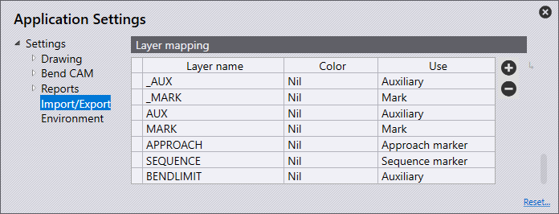

Import/Export
In this section, we will cover the configuration of Import settings.

Click on the Settings
 icon from the home page.
icon from the home page.

Import settings
In this section, we will cover the configuration of Import settings. Click on the Settings icon. Click on Import/Export and navigate to the Import settings.

Units for DXF files - Set to either millimeters or inches here.
Stitch together lines/arcs closer than this - Set this value (0>1mm). When importing a part which has lines/arcs closer than the set value, the software will automatically stitch together upon import.
Maximum thickness for sheet-metal part - To recognize a large sheet-metal part, the sheet-metal recognition threshold would need to be increased. (10>40mm) This is automatically set by default to 25mm or an inch, depending on the unit being utilized.
Point entities - Depending on the option selected will determine on how points will be imported.
Import all - All points will be imported and displayed.
Skip points on polylines - This skips all points that are detected on polylines.
Skip all - This skips all points on import, and none are shown.
Ignore layers in DXF/DWG files - DXF and DWG drawings are usually created on different layers. With this setting, the software ignores these layers and moves all objects onto the default layer.
Explode blocks in 2D drawing - Splits groupings during importing
Convert white entities to black - Turn this setting on to convert white objects into black objects during import.
Darken colors during DXF import- Turn this setting on to darken coloured objects during import.
Remove duplicate segments - Turn this setting on to remove any duplicate geometry found in the part when importing.
DXF settings
In this section, we will cover the configuration of DXF settings. Click on the Settings icon. Click on Import/Export and navigate to the DXF settings.

Angles in DXF are interior angles - Activate this setting for the angles in a DXF to be handled as opening angles.
Export settings
In this section, we will cover the configuration of Export settings. Click on the Settings icon. Click on Import/Export and navigate to the Export settings.

No POLYLINE objects in DXF output - Usually, closed contours are output as polylines when exporting DXFs. Some CAD systems cannot process this output. With this setting, the software outputs the DXF with lines and arcs. These files are readable everywhere, but the files created are larger and the connections between the lines and arcs are lost
Output bend-info when saving DXF files - Turn this setting on for an exported DXF to be output with bend information.
Bend-info in Starmatik format - Turn on this switch to output the bend information in Starmatik format. This is where a text entity is positioned exactly at the middle of each line that is to be a bend line.
Convert black to gray on output - When exporting 2D data, the objects in the DXF file are output in black by default. In order to be able to better recognize the objects in the CAD programs, the objects are output in grey with this setting.
Start MetaCAM when PDG files are exported - Turn this setting on for a PDG file to be automatically configured to open in MetaCAM
Format for flat pattern - When exporting a flat pattern, this can be set to GEO, DXF, or PDG file format.
Spline conversion
In this section, we will cover the configuration of Spline conversion settings. Click on the Settings icon. Click on Import/Export and navigate to the Spline conversion settings.

Convert splines on import - Set here whether the spline conversion is turned off or set to convert the splines into lines or arcs. In either case, each spline will be converted into a single polyline object that contains line segments, or arc segments.
Node-count computation - The number of lines or arcs that are generated is computed using one of two mechanisms: pitch or deviation.
Length of each line or arc segment - If Pitch is chosen in the Node-Count computation, set here the length of each arc or line segment to break down the spline using this step-length.
Maximum deviation during approximation - If Deviation is chosen in the Node-Count computation, set here the maximum deviation that is permitted between the original smooth spline, and the line or arc approximation. The polyline is constructed as few segments as possible, while still keeping the maximum error to within this limit.
Assembly Explode
In this section, we will cover the configuration of Assembly Explode settings. Click on the Settings icon. Click on Import/Export and navigate to the Assembly Explode settings

Skip sheet-metal parts with no bends - When exploding an assembly, turning this switch on will only show the sheet-metal parts with bend lines. Turning off will show all parts in the assembly.
Components (nuts/bolts etc) to display - Use this setting to select which options to display when exploding an assembly which contains other components.
None - Only the sheet-metal parts are displayed after exploding, and other nuts/bolts are not.
Unidentified - Only components which are yet to be identified in the software are displayed.
All - All components are displayed.
Layer mapping

In this section, we will cover the configuration of Layer mapping. Click on the Settings icon. Click on Import/Export and navigate to the Layer mapping settings.
In this section, layers which are used on parts which are being imported into the software can be automatically mapped to its functionality (use).
If an imported part has a MARK layer this can be set to automatically use the Mark layer in the software.
Layer name - This is the name of the layer which if a part is imported with this it will use the functionality set in the 'Use' panel.
Use - This is the functionality of the layer. The different options available are:
Standard - This is the standard layer to be used for CAM.
Auxiliary - An auxiliary layer, not to be used for CAM.
Mark - Any entities in this layer will be marked, not cut.
Approach marker - Point entities indicating laser approach position.
Sequence marker - Text markers indicating the sequence order of contours.
Forming center - Center mark for forming (point or small L).
Forming foot print - The outline (footprint) of a forming.
Evaporate - This layer would be used to distinguish film burning.
Dot marking - This layer would be used for QR codes.
Info - This is an information only layer.